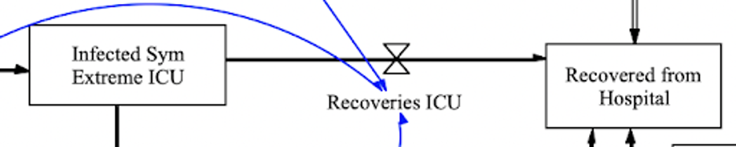
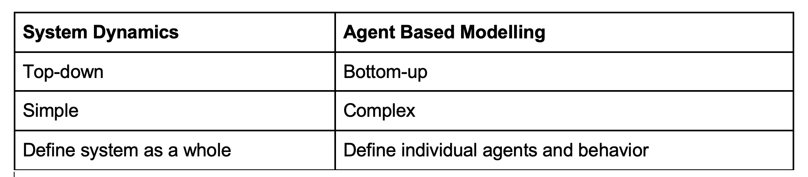
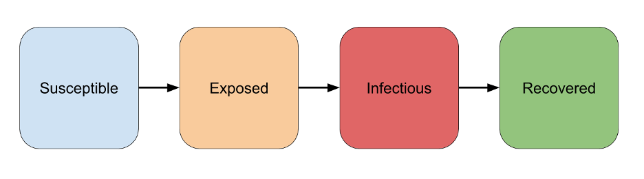
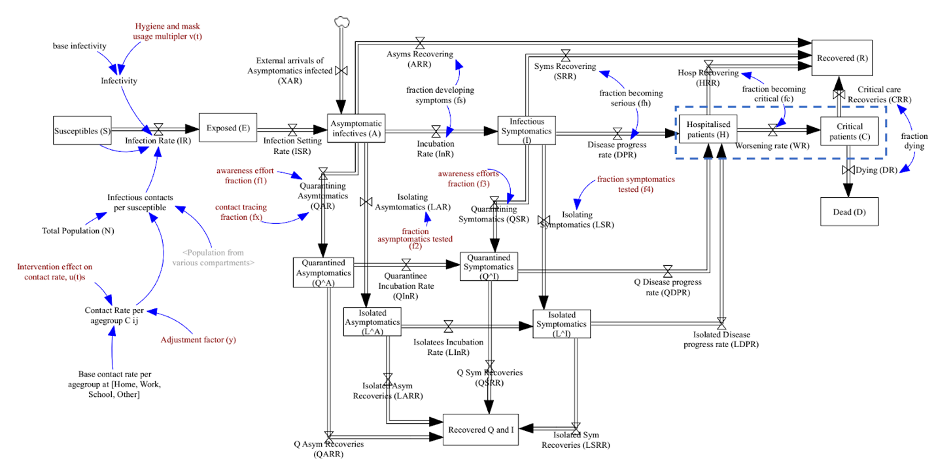

A COVID-19 System Dynamics Model for the Indian Government
MS&E 433 - Stanford University
Table Of Contents:
Executive SummaryIntroduction to System Dynamics
The COVID-19 SEIR Model for India
Running the Simulations in Vensim
Next Steps
Authors
Productionizing a COVID-19 System Dynamics Model for the Indian Government
Amay Aggarwal, Andrew Hwang, Nishant Jain. Under the Guidance of Professor Ashish Goel
Executive Summary.
The Office of the Chief Economic Advisor to the Government of India has worked with Professors Jayendran Venkateswaran and Om Damani of the Indian Institute of Technology, Bombay, in order to understand the spread of COVID-19 in India through a System Dynamics SEIR epidemiological model approach. They have partnered with researchers at Stanford University in order to share their findings with the appropriate audience of policymakers, scientists, and the general public.This page has two core objectives:
- Distill the modeling approach and findings into a clear high-level summary from first principles for the general public.
- Provide researchers and policymakers with instructions on how to run the simulations themselves using the Vensim modeling tool.
Introduction to System Dynamics
What are System Dynamics Models?
System Dynamics is a common modelling approach used to capture nonlinearity in complex systems. The approach focuses on modeling the relations between the different key elements of each system and developing a top-down representation of the
system as a whole. To do so, it traditionally incorporates a series of “stock and flow” diagrams, where each stock represents the quantity of a certain entity, and a flow represents the change in amount of a given entity.

The model philosophy involves separating the system into both its structure and relevant parameters. On one hand, the structure of the system is determined by the modeler’s interpretation of real life processes and information flows, whereas parameters tend to be calibrated primarily based on real life data. In developing the structure, many arbitrary choices are made to simplify complex phenomena into tractable problems, and to deal with uncertainty.
Why System Dynamics Models?
There are two primary modelling approaches that are currently being used to simulate the effects of Covid-19.  One of the primary advantages of system dynamics is the ability to visualize complex feedback loops and structures within the model. Furthermore, it is often seen as the simpler approach.What are SEIR Models?
One type of System Dynamics model that is commonly used in the field of epidemiology is the SEIR model. An SEIR model simulates the following sequential phases of infection in a population: Susceptible (S), Exposed (E), Infectious (I), and Recovered (R). Each node in the SEIR model diagram represents a stock variable containing the number of individuals in the population at that state of infection. Thus, the sum S + E + I + R constitutes a collectively exhaustive representation of the entire population. Quantities flow from one state to another based on the model dynamics parameters specified, enabling the spread of a disease to be simulated. SEIR models can be extended to incorporate other constraints, policy interventions, and state dynamics. 
The COVID-19 SEIR Model for India
Executive Summary
As mentioned, one of our main objectives for this project was to translate scientific research on COVID-19 into a more publicly consumable manner for both other researchers and the general public. Over the course of this section, we hope to analyze one particular System Dynamics (SD) approach to modelling the spread of COVID-19 in India. Researchers Jayendran Venkateswaran and Om Damani of the Indian Institute of Technology, Bombay have created and published a paper that describes efforts to model the spread and highlight the effectiveness of varying infection-minimizing policies. Their results indicate that universal testing, with contact tracing and isolation of infected patients, is effective for containing the spread of the virus; though, if lockdown procedures alone are deployed, the epidemic will resurface.We will start by providing greater detail into the design choices of this model as well as organizing their findings into a publicly digestible manner. Then, we will discuss key assumptions that their model uses as well as the model’s limitations. Lastly, we will report key comparisons between Venkateswaran and Damani’s model and many of the existing models to offer insight into some of the strengths, weaknesses, and potential future directions that researchers and the public can adopt to limit the spread of COVID-19.
Detailed Overview
In their paper, “Effectiveness of Testing, Tracing, Social Distancing and Hygiene in Tackling COVID-19 in India: A System Dynamics Model,” Jayendran Venkateswaran and Om Damani have created a System Dynamics model of COVID-19 spread in India that is used to project the rate and number of infections following various infection minimizing measures that are currently being considered on a statewide basis[]. Their model is based off of the standard SEIR model, expanded significantly to also incorporate a detailed age-structured compartmentalization wherein the population is divided into various age groups to indicate how COVID-19 progression and interventions affect each group.One unique difference of the current model is that it has been able to simulate independent COVID-19 intervention responses such as the effects of testing and contact tracing, as well as isolation, quarantining, and social distancing. Many other SEIR based models (Lourenco et. all. 2020; Ghaffarzadegan and Rahmandad 2020, MedRxiv 2020 are able to detail the disease’s progression. However, approaches that explicitly model quarantining and isolation of both symptomatic and asymptomatic are not as heavily researched.
 Above, is a flow diagram of the proposed model. Each of the age-stratified populations are separated. Each age group is divided into Susceptibles (S), Exposed (E), Asymptomatic Infectives (A), Infectious Symptomatic (I) cases, Hospitalized Patients (H), Critical Patients (C), Recovered (R) population, and the Dead (D).
Initially, the Susceptible (S) people get exposed to the virus from contact with an infectious person but all those exposed at the start will be non-symptomatic and non-infectives, only becoming infective after some number of days. Then, some will move from being infectious but not symptomatic to being infectious symptomatics (I). A fraction of them will recover, while others will become Hospitalized and/or Critical Patients who will go on to be either Recovered or Dead.
To model the various intervention policies, this is modeled by the flows out of A and I. Quarantine and Isolation restrict the flow in/out from these groups. Social Distancing measures were similarly modeled using various flow restriction fractions to impose time dependent control measures. For further reference to the specific parameters and flow fractions defined, refer to the appendix of the published technical report.
Assumptions and Limitations
A number of simplifying assumptions have been made to make the model computationally tractable. These may introduce several key limitations that should be considered when interpreting the results of the model in context.-
Parameter Estimations
First, we must note that many of the model parameter settings were based on published reports and other crowd-sourced data. Due to the recency and infeasibility of total as well as accurate testing, parameters regarding the spread of COVID-19 were found from averaging various sources that included doctors, crowdsourced data, and other published findings.
-
Seasonality and Susceptibility
One set of assumptions has to do with weather conditions and seasonality: these are explicitly not considered as playing any part in the progression of the spread of the virus. Evidence of seasonality or differential spread rates in different weather conditions seems to be lacking in contrast to other related illnesses like the annual influenza recurrences. Similarly, in order to be conservative rather than optimistic, every person is considered susceptible to the virus, with innate immunity not encoded in the model.
-
Testing
The model also does not currently possess any uncertainty related to testing: the accuracy of testing is assumed to be absolute. Many of the projections and the updating that would be required to effectively monitor and project future growth of spread have an emphasis on testing.
-
COVID-19 Exclusivity
The model does not consider the many non-COVID related health and economic concerns that are going to be exacerbated and left to be untreated as a result of increased spread and intervention policies. For instance, it is very difficult in many places to be treated for other serious non-COVID illnesses, as hospitals are overwhelmed and are prioritizing the pandemic over other health concerns.
-
Density
Population density can have a huge impact on the spread of the disease, as evidenced by the concentration of cases across the world in urban centers. For simplicity, this model assumes a uniform density without subdividing the population into distinct density classes such as rural and urban.
-
Homogenous Populations
Lastly, the model assumes that population stratifications are considered homogenous. In the case of the age stratifications, populations are treated as the same despite key reports that suggest socioeconomic class is an even stronger predictor in understanding a person’s likelihood of recovering from COVID-19. Since it assumes homogeneity, this model does not consider the impact on other socio-economic sections of the population who are unable to potentially self-quarantine.
Comparison with Existing Models
Contact Tracing and Isolation:
One of the core differences between this model and the previous literature is that it is able to simulate the effects of contact tracing and isolation in the SEIR model. The model has built in a structure that can model the effects of these policies on the overall number of infected patients. This allows the model to depict the effect of this policy intervention on the spread of the disease.Policy Implications
The model is useful for understanding the impact of different interventions to decide which strategies are feasible in combating the spread of the virus. One sobering takeaway is that the virus will resurface from a few number of outstanding cases, even with strict lockdown procedures implemented prior. This implies that a lockdown on its own may be helpful at delaying the strain on the capacity of the healthcare system by "flattening the curve," but it must be combined with other interventions for long-term containment. The model seems to indicate that contact tracing and isolation of exposed patients, based on a strategy of universal testing, may be one of the only effective tools for containment. Better hygiene and widespread use of masks are also desirable practices that should be implemented to reduce viral spread.Future Directions
There are several ideas on how the model can be extended to capture and simulate different phenomena of interest.-
Unreliability of Testing
Currently, the model does not encode any uncertainty in regard to testing. It assumes that the diagnosis of sick patients can be conducted instantaneously and without error in modeling the transmission of the virus across the population. Incorporating the unreliability of testing into the flow model may be a promising direction that makes it more in tune with the dynamics we are observing in the real world today, as current testing efforts do have non-zero error rates.
-
Reinfection
As an SEIR model, the current COVID-19 system dynamics model we have documented here does not account for reinfection. It assumes that once a patient has recovered, they are removed from the dynamics of further disease spread. There do seem to be reports in the news media of patients contracting the illness after recovering, indicating that recovered patients may be susceptible to contracting the disease. This can be modeled easily as an SEIRS model, where recovered patients proceed to flow into the susceptible pool, but more data on this topic would be required to accurately estimate parameters for this additional flow mechanism.
-
Generalization to Other Regions
This model has been designed as an SEIR system dynamics approach to simulating the spread of COVID-19 in India in early 2020. This includes hard-coded structural specifics related to the initial lockdown that the Indian government imposed in March 2020. Furthermore, many parameters for the model have been calibrated on data from India. Despite these India-specific modeling choices, much of the structure of the model can be applied to other regions since this is, at its core, an SEIR model. With some recalibration of both the structure and parameters, this Vensim simulation infrastructure could serve as an effective epidemiological modeling tool for COVID-19 in other countries.
Running the Simulations in Vensim
In this section, we provide instructions on how to download, open, and run the COVID-19 models for yourself using Vensim.Introduction to Vensim
Vensim is a simulation software package that can be used to create system dynamics models and then export them for viewing and editing. Vensim has several advantages, namely that it provides a variety of options for defining and running simulations with features such as stock and flow variables, dynamic feedback, and causal loops. This level of control, however, can be a source of complexity that makes Vensim somewhat challenging for first-time users. The goal of this section is to provide you with enough information to run the COVID-19 system dynamics model in the appropriate Vensim installation for your needs.Versions and Installation
Vensim comes in several versions with different levels of free and paid features depending on the license you choose. This section summarizes the different capabilities while helping guide you to pick a version based on your needs. For an authoritative description of the license limitations, please see the vensim website and make sure you meet the terms and conditions.-
Vensim Personal Learning Edition (PLE)
Vensim PLE is a version of Vensim that is free for personal and educational use. It provides a graphical user interface for creating and editing models. As a researcher exploring the COVID-19 models for the first time, this is likely the version of Vensim that you would like to download. A key limitation of Vensim PLE is its lack of subscripting support that makes modeling subgroups, such as population age ranges, more difficult to encode in the Vensim environment.
-
Vensim Model Reader
This version of Vensim provides read-only access to Vensim models. It is freely available and meant as a utility for viewing models that others have distributed. If you plan to use the models without modification, then this will be the ideal version to download.
-
Vensim Pro
Vensim Pro is one of the paid versions of Vensim that is available for sale. If you require subscripting capabilities for performing more advanced system dynamics simulations, then you will require a Vensim Pro license. The team in India at IIT Bombay has a version of the model that uses subscripting and hence requires Vensim Pro. Subscripting is used to simplify the process of breaking the stock variables down by age group. However, in the interest of public accessibility and transparency, we have provided a simplified version of the model that treats the population as a single group without subscripting so that it can be viewed in Vensim Reader and modified in Vensim PLE.
recommend that you install Vensim PLE
if you meet the criteria for its license and plan to modify the models. It can be downloaded from the following link: here . Fill out the form, which will send you an email containing instructions on downloading and installing the software.Note: An Aside on Subscripting
Subscripting is a feature in Vensim that allows subgroups of a particular variable to be defined. This enables complex interactions in a model to be defined in a way such that the resulting model is still visually tractable. For instance, in this SEIR model, we could model different age groups as different variables, but is it far simpler visually to see one node in the flow diagram representing any given stage (such as "Susceptible"). For more details on subscripting, please see here.Opening the Model
Once you have set up Vensim PLE, you can proceed to open the appropriate model file. [Insert directions about the specific file to open and where to access it (e.g. github, other stanford link, etc). TBDRunning Simulations
Vensim provides the ability to define different views that illustrate aspects of the underlying model. Views can possess visual descriptions of different variables and the relationships between them. They can also be used to present graphs of different variables, allowing one to create dashboards for understanding the outputs of the model. To learn more about views, please read the following links from the official Vensim documentation.https://www.vensim.com/documentation/how_views_work.htm
https://www.vensim.com/documentation/22845.htm
There are several views defined for this COVID-19 SEIR model. For now, we will focus on the Model and Chart views.
-
Model View
To access this model view, select the "View: Model" option in the view selector button at the bottom left of your Vensim PLE interface. This view provides the flow diagram illustrating the progression through the different stages of the model. In essence, it outlines the structure of the SEIR model with flows from one state to another.
-
Chart View
To access this chart view, select the "View Chart" option in the view selector button at the bottom left of your Vensim PLE interface. This view provides a dashboard for you to see different values from the model simulation graphed over time, such as the cumulative number of cases and the number of asymptomatic, recovered, and dead patients. Upon opening the model for the first time, the charts may not be populated. The following section will describe how to run the simulations using SynthSim.
SynthSim
is an interactive feature provided in the model that enables you to view the effects of certain parameter settings on the output of the model. To trigger SynthSim mode, simply click on the "SynthSim" button towards the top of the Vensim user interface, next to the "Simulate" button.Once this mode is triggered, you will see both the chart view and model view change: each should possess a new set of slider inputs that allow you to change variable values by dragging the slider bar. You will now be able to modify different parameters across the model and see the resulting impact. The model view will display a graphical depiction of the values of different quantities within each node in the flow diagram over the simulation duration. The chart view was designed to function as a dashboard, within which you will see several graphs populate with values and update in real time as you change parameters.
To exit SynthSim mode, you can click on the "Stop Setup" Button, also located on the top of the Vensim interface window.
Other Tips and Tricks
Please only edit the model using the Vensim graphical user interface, as it provides more robust safety controls around error checking. Though it is possible to modify the file directly by opening it in a text editor, this is not advised.To change the background color of the model view, simply right click on the Vensim model sketch and a pane should open. Within that pane, you will be able to select a new color for the background. This should help with changing the view to be more palatable to your needs.
Additional Resources for Vensim
The Vensim website possesses other resources that will be helpful:-
Vensim Documentation:
-
Vensim Index:
Next Steps
It is highly advisable that you proceed to read the technical report prepared by Professor Jayendran Venkateswaran and Professor Om Damani of the Indian Institute of Technology, Bombay. This report describes the models in-depth, explaining the assumptions and key results. It is available on the arXiv
Please Use the Model Responsibly
Models attempt to capture our understanding of how a particular phenomenon works so that we can better predict the effect of different actions and interventions. However, it is really important to realize that any model has simplifications and assumptions that may make it deviate from the truth. As researchers, we have to strike the right balance of usefulness between the extremes of complexity and tractability. With that in mind, we recommend that, as you use any model to inform policy decisions, you take care to confirm that you're interpreting its results in the correct context. It is important to understand the limitations of any modeling strategy and not take its results as a perfect oracle. Please validate the effects of interventions and question assumptions. Truly participate in the scientific discourse and do not accept anything as absolute without corroborating evidence.